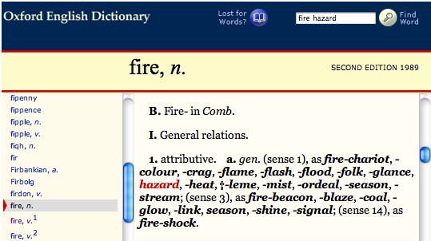
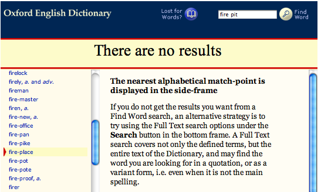

No. The only people whose speech you transcribe are the subject child, the primary caregiver(s), and (during literacy visits only) the experimenter.
Use the --- symbol only once when the PCG begins speaking to a non-child entity. Place the symbol again only if the PCG speaks to the child and resumes speaking to the other entity.
See also
It depends on what the phrase is. If the phrase is a complete sentence itself, transcribe it on a separate line. To qualify as a complete sentence it must have a verb and either a subject or an object (for example, “know what” or “you see”). See Section 4.7 and 4.9.3.
The exception to this rule is inverted auxiliary tag questions (for example, “you want some food, don’t you”), which should be transcribed on the same line.
See also
First, listen closely to determine if the two speakers really do start talking at the same time. If one starts even slightly before the other, transcribe that person first.
If the two start speaking at the exact same time, transcribe the utterances on separate lines in the following order:
- Experimenter (for literacy visits only)
- Mother
- Father
- Child
See also
The + symbol is primarily used to form compound words, proper nouns, and titles considered to be one lexical unit, as defined in Section 6.5. It is also used for abbreviations (t+v, d+v+d), foreign phrases used as fixed expressions (cul+de+sac, non+sequitur), catch phrases (yabba+dabba+doo), and a few fixed phrases (kind+of, how+about).
The _ symbol is primarily used to join words in multiple word proper nouns and titles (e.g. The_Cat_In_The_Hat) considered to be more than one lexical unit, as outlined in Section 6.6.
The + symbol and _ symbol can be combined when appropriate (Toy+Story_Two, Jackass_Three+D).
See also
See the list of Spelling Conventions for more examples of how to use the + and _ symbols.
While transcribing a visit, you may encounter words whose spelling you are unsure of. For most normal words, we simply use standard American spelling found in any American dictionary.
For a list of conventional spellings of non-word communicative sounds and words not found in the dictionary, consult the list of standardized spellings.
To decide whether a word is a compound, use the Oxford English Dictionary. See Q7 for more.
To decide whether to use a -y or -ie suffix for a word like ducky/duckie, see Q8.
For guidance on transcribing web addresses, see Q9.
While we use standard American spelling for most words (e.g. color, not colour), we use the Oxford English Dictionary as a resource for determining whether a word is a compound or not. If you type in a two word phrase (e.g. fire hazard) and it comes up with an entry for that phrase, even if it doesn’t have its own main entry, write it as a compound (i.e. with a + sign between words; see Section 6.6 for details).
For example, fire hazard produces the following search result, qualifying it as a compound word:
Conversely, since fire pit yields the following results, it would be transcribed as two words, with no + sign:
See also
People often add an “ie” or a “y” sound to the end of a word, usually a noun. Use the following guidelines to decide whether to transcribe with the -ie suffix or the -y suffix.
If the suffixed word is being used as an adjective or adverb, use the -y suffix (e.g. “this soup is pretty vegetabley”, “do you have a poopy diaper?”).
If the suffixed word is being used as a diminutive noun, use the -ie suffix (e.g. “look at that cute little mousie”, “did you make a poopie?”).
spelling for a diminutive noun that uses -y, such as “kitty”.
See also
If a speaker mentions an address for a website (i.e., a URL), be sure to spell it out as a capitalized compound word with underscores, as it is actually spoken. For example:
Be sure to capitalize these compounds so that they are recognized as proper nouns.